一張可以「攀登」的實體專輯——從概念發想到實體完成的完整企劃紀錄。
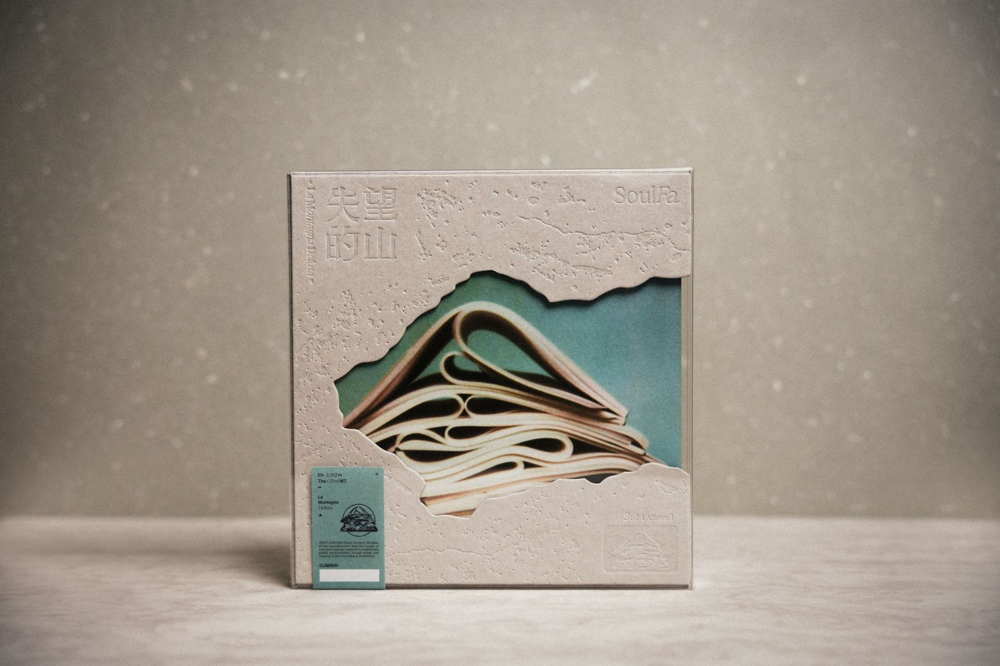
「真的是帶領大家,
一起在爬這座山。」
《失望的山》的核心概念,是把「失望」具象成一座山——一座由日常紙張堆疊而成的山。帳單、考卷、獎狀、情書、發票、傳紙條……這些再平凡不過的紙,在生活裡一張一張累積、摺疊,最後堆成了每個人心裡那座「失望的山」。
主視覺中的山,由十張摺起的紙交疊而成——正好對應專輯的十首歌;封底如里程碑,十首歌的秒數逐一累加成為一座座「高度」,而這座山 2,282 公尺的海拔,正是來自整張專輯的長度。
於是整張專輯被企劃成一場登山:聽者是「CLIMBER(登山者)」,側標是入山證,十首歌是攀登的路線。企劃期間,我們也邀請團員收集自己人生中真實的紙張——成績單、筆記、票根——讓這座山,真的由大家的人生堆疊而成。
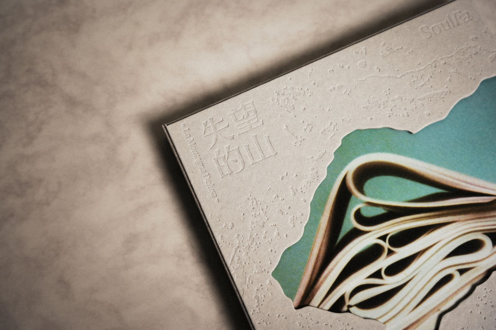
實體專輯的概念由我與三位團員共同討論發想——從封面攝影師 Chihhsienchen 拍攝的封面照出發,一路延伸出整座山的世界觀;設計師 JERRY YANG 也在過程中給予非常多靈感與建議。這次的專案完整經歷企劃、設計、製造、宣傳四個階段。
與團員共同發想「失望的山/紙張之山」核心概念與「聽者即登山者」的敘事框架;並邀請團員收集自己人生中的真實紙張,讓概念長出血肉。
擔任專案窗口,串聯樂團、設計師、攝影與印刷端,確保概念在每個環節被一致地執行。
定調「紙的地形」視覺語言:壓印地形、撕裂開窗、入山證側標、星圖內袋等關鍵元素的方向皆由企劃端提出。
與設計師及印刷廠反覆溝通刀模、打凸、特殊裝幀的可行性與成本,跟進打樣到量產的每一次校正。
撰寫專輯文案與企劃文字,讓「登山」的語彙貫穿側標、內頁與宣傳物料。
規劃從企劃到發行的整體時程與製作預算,在特殊印刷工藝與成本之間取得平衡。
規劃實體專輯的宣傳視覺與社群露出,延伸專輯世界觀至發行後的推廣素材。
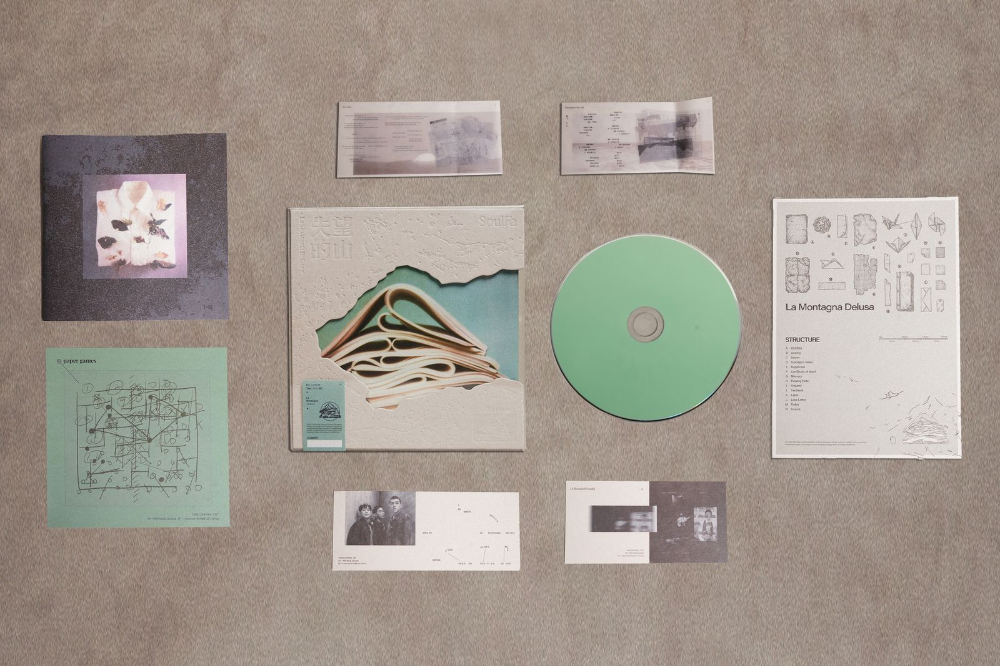
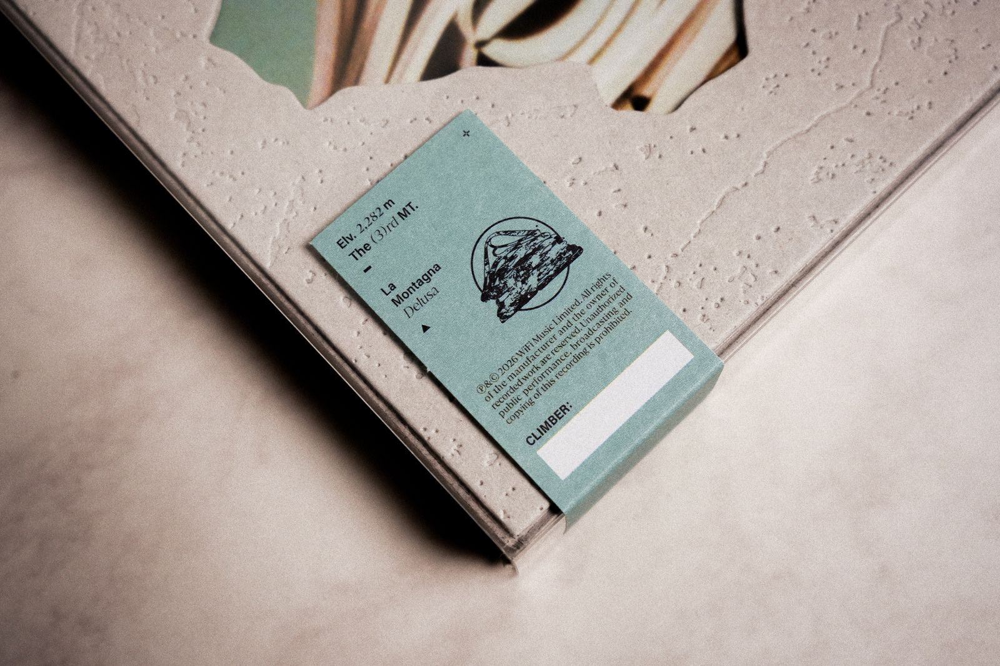
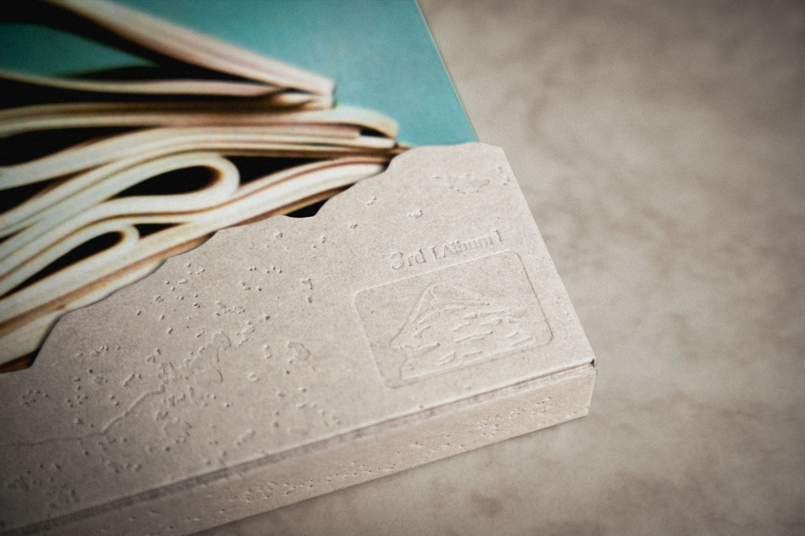
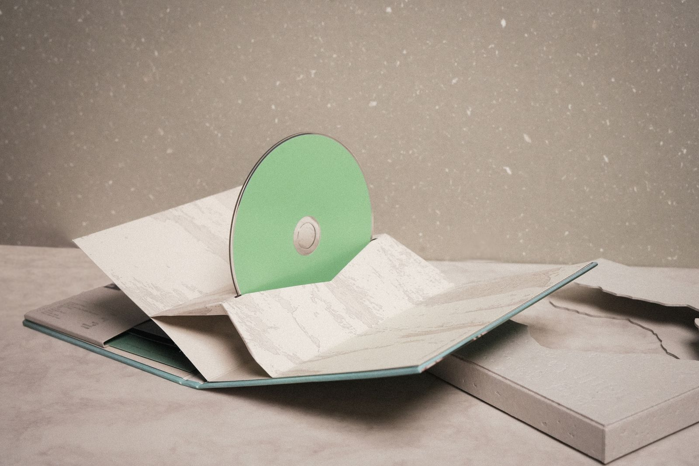
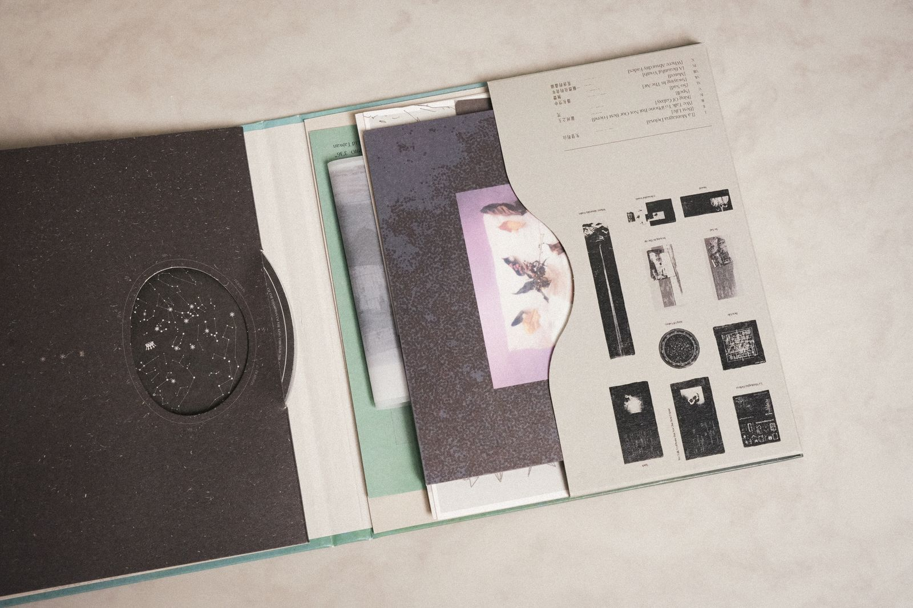
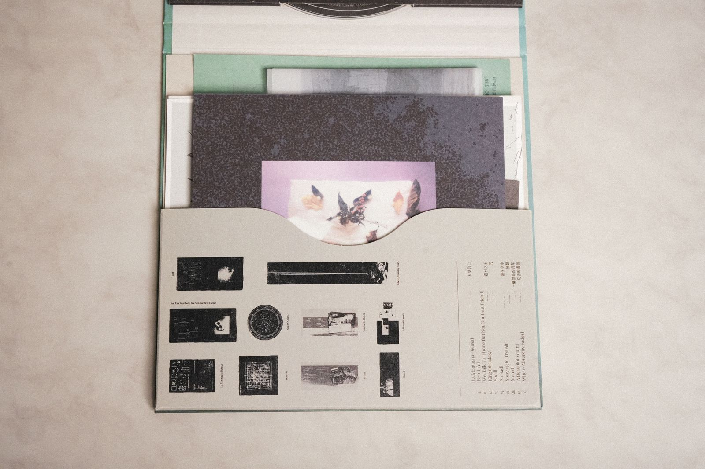
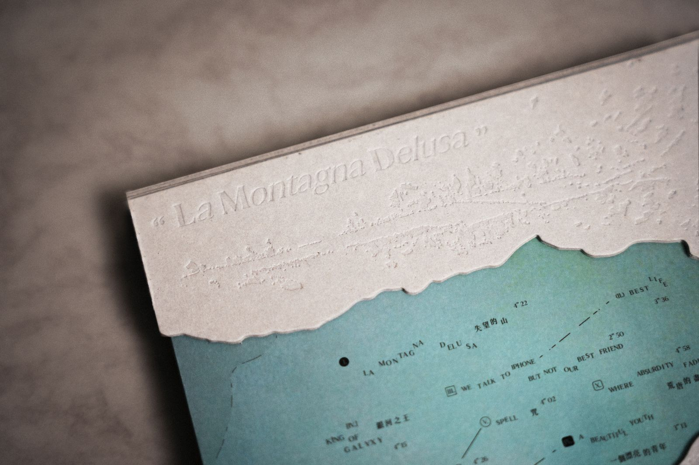
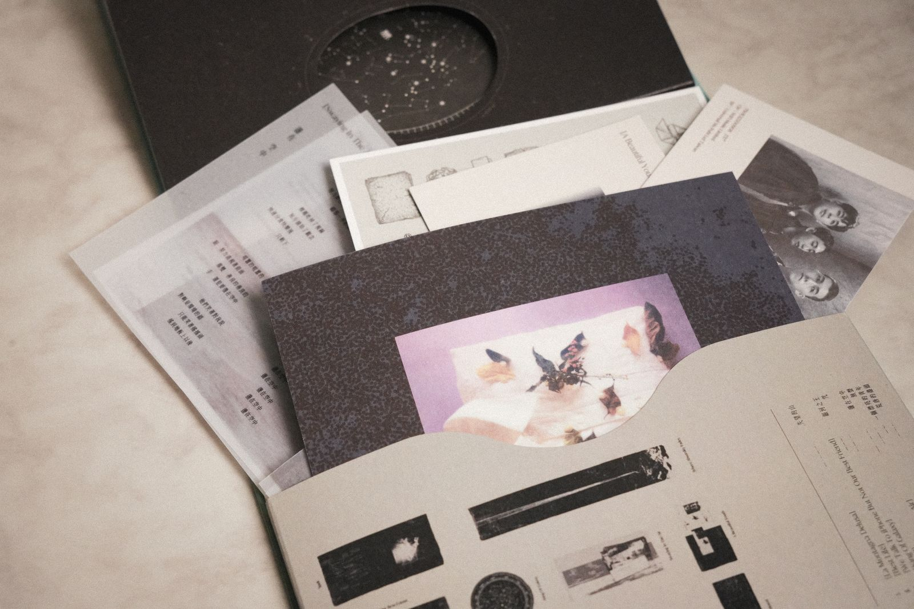
從「失望」出發,與團員共同發想以紙張堆疊成山的核心意象,確立專輯世界觀及「登山」敘事。
定義主視覺(摺紙之山)、材質方向(裸紙、壓印)與關鍵物件(入山證側標、星圖內袋),撰寫設計需求文件。
與設計師逐項收斂封面、內裝、十張歌詞印刷品與宣傳物的設計,同步撰寫專輯文案。
與印刷廠來回測試刀模、打凸深度、紙材搭配與裝幀結構,於預算內保住每一道關鍵工藝。
監督量產時程與品質,確認多紙材、多印刷品的組裝順序與成品一致性。
規劃發行宣傳:拍攝陶藝物件宣傳視覺、製作逐格動畫開箱影片,並企劃「邀請設計師一起開箱」的對談影片,讓設計理念由創作者親口說給樂迷聽。
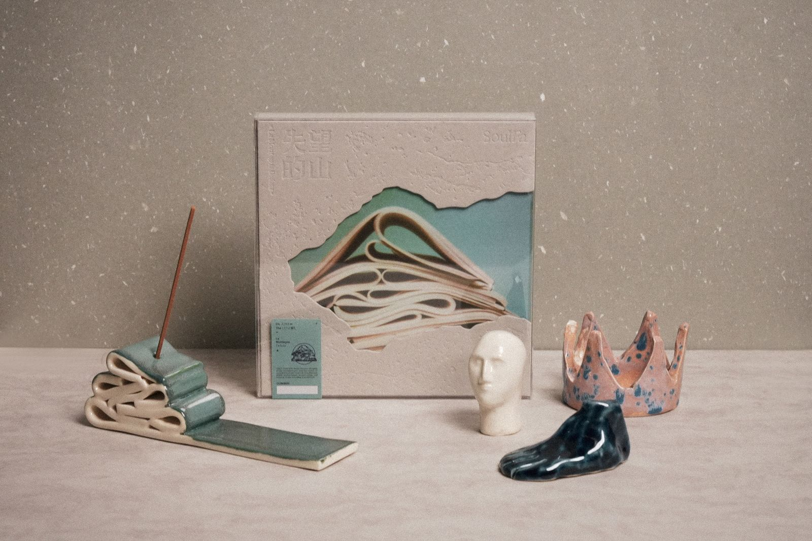
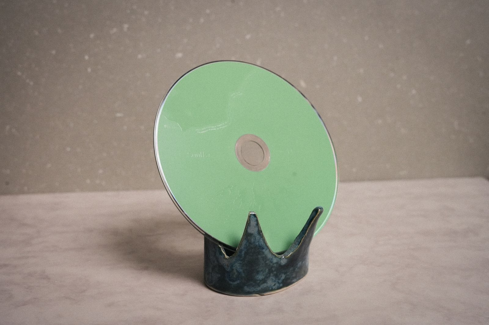
本作品集所載照片為《失望的山》實體專輯成品紀錄。專輯著作權屬 WiFi Music Limited 與 SoulFa 靈魂沙發所有;本頁面僅作個人求職作品集用途。